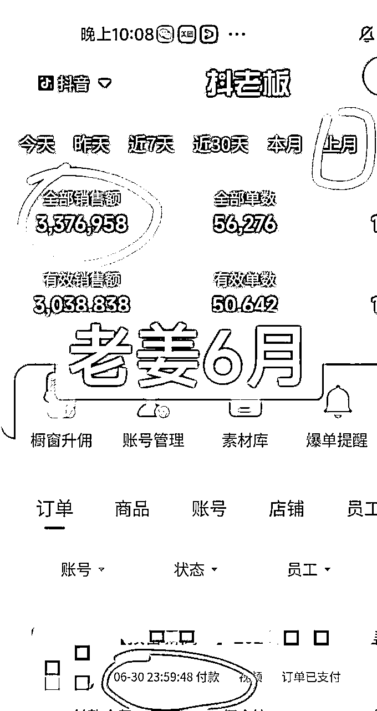
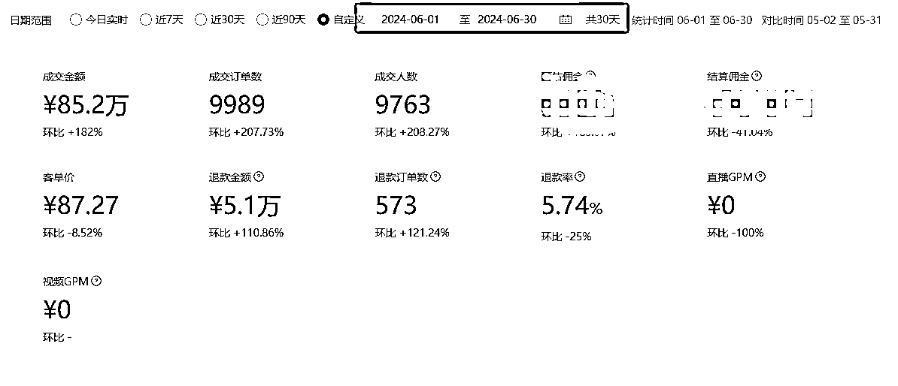
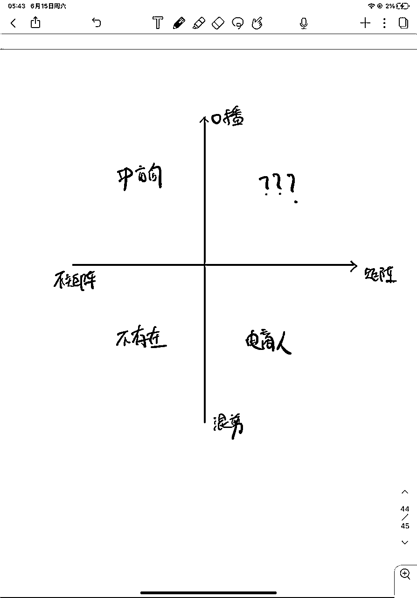

来源：https://bqwkrkc6dh.feishu.cn/docx/Ac7HdDG2TokddQxPA8Ic1YcAnnc
大家好，我是lip老姜。过去3个月，依然坚定的走在短视频教辅赛道上。
过去半年时间，兄弟不才，在这里持续更新养成系的项目，教辅短视频带货。总觉是最后一次更了，没想到又活了下来。
目前的一些成绩，小团队从最初了2个人，现在已经4个人了。6月流水突破450万。


我自己也盘了盘过去3个月发生了什么，发现一个神奇的事情，就是我总结出来这几个月做对的事情，完完全全就是生财一直在强调的一些，想要赚钱的基本原则。
今天，我就借着我自己这3个月的进展，聊聊生财那些，真的能帮人挣钱的原则。
市面上有一个问题经久不衰：为什么懂那么多道理，却依然无法过好这一生。
这个问题放在生财的场子里，或许可以换成：为什么有的人懂那么多发财致富的道理，却依然穷困潦倒一辈子。
我有一个答案，
道理，只有通过人格和故事穿透你的身体时，才是你的。
道理很简单，你想嘛，一个人的改变是怎么发生的？人就像一只空桶，道理和知识就像水一样往里面倒进去，就行？
知识越多，道理越多，桶就越满，人就越强？
这个逻辑链条太粗糙了。
知识改变命运，常常是通过一个介质——人格和故事——来实现的。我们读过的书，走过的路，看过的文章，刷过的视频，大部分都会遗忘。
但如果这其中，我们遇到一些喜欢的人、一些有趣的人，一些秉持着我们早都知道的原则，并且因此拿到了结果的人。那这些原则就会通过一个个故事穿透我们的身体，变成清晰的烙印，深刻地影响着我们。
此时，道理才真正是你的。
所以，希望我今天讲到的故事，能让那些硬道理能够穿透你的身体，为你所用。
如果做到了，我与有荣焉。
想赚钱，执行力拉满，就完了。生财一直在强调执行力。但是，我一直觉得执行力，它是一个结果，你没法空口白牙上嘴唇碰下嘴唇，去要求一个人有执行力。所以，与其强调执行力，我觉得不如强调执行力的“前置条件”：
所谓菩萨畏因，众生畏果，把因给它控制好，结果，再差也差不到哪去。
而执行力的前置条件，我称之为，磨心茧。
要理解这个概念，还要说到6年前，我第一次做销售那会儿。
2018年，那会我30。知道销售赚钱，所以选择做大客户销售，自然也知道销售要面临什么，做好了被客户虐的准备。
但是，实际的操作过程，还是难以下咽。
刚开始，你要给很多莫名其妙的用户打电话，用莫名其妙这个词真的是不冤枉，这些客户可能是谁都不知道从什么鬼地方低价买来的线索；也可能是被你的前同事们骚扰过无数次的“潜在客户”；更有甚者，就是一堆“随机的，完全和你业务无关”的电话。
此时只想骂一句妈惹法克。
电话只是第一步，目的是要成交几万，甚至几十万的东西，你其实距离成交遥遥无期。还需要进一步跟进，线下拜访，确认需求，提出方案，讨价还价，其他商务动作，再到成交。
所以不是一件容易的事。
对很多新手来说，电话那关，可能就被打倒了。
我回过头，再看这段经历，我觉得是一个心里上茧的过程。想做点事，其实谁都逃不过这个过程。
你会在一次次打电话，拜访中，不断受挫。受挫是常态，顺顺利利让你签单才是偶然。
如果不能把自己的玻璃心用老茧包裹起来，遇到一点拒绝，都被干扰到情绪，打乱做事计划，那肯定就没有后续的了。
所以，执行力的前提，就是不要被这些所谓“拒绝”干扰，只盯着目标，每天100通有效拜访电话，没打完，就继续干，没有时间给你回味那通“拒绝”的电话。
开始打电话的时候，挂了这一通，打下一通的时候，还寻思一下，下一个怎么说，做一做心理建设。后来，就是直接打。只要是有效号码，直接拨。话术长到嘴上，张嘴就来。让自己进入一种，“脑子在思考怎么把这个事情做好，但是心已经没有什么感受，毫无情绪波澜做事情”的状态。
不去在乎，上一通电话是热情似火，是家长里短，还是哭爹骂娘。
就是心啊，已经被厚厚的老茧包住了，百毒不侵。
大客户销售，这个岗位这件事，是一条无数人验证过的可行的路，你要做的就是听话照做，人家是怎么出结果的，那你照着做，不会有什么意外，也会出结果的。
就像咱们做项目一样，有结果的人，给你说了12345，磨好心茧，执行就完了。
做短视频也一样。不出单是常态，爆单才是偶然。
所以，做短视频，也是不断给心里上老茧的过程。
不要因为十个二十个视频，不出单，就怀疑自己的方向，怀疑自己的动作做的不对。
过去一个月，观察了跟着我做的，持续在出单、在爆单的朋友，几乎都是在交流完成后，就开始执行了。中途找我，问问选品，甚至扯扯淡，很少纠结某个问题过不去的。
反而是那种，不断问我，
“某条素材怎么不出单”，
“我都已经做了那么多工作了，就是不出单”
“发了好几条视频了，为什么就是不消耗”
等等这样问题朋友，内心还是属于有点涟漪就波动，进而影响自己的执行动作。
遇到一点挫折，有些朋友会立刻停下手中的活，马上寻找心理慰藉，也不管定好的任务完没完成
虽然对于短视频内容来说，情绪传递很重要。但对于创业者，情绪是个副产品。
还是那句话，磨心茧，收起你的情绪，做一个没有感情拍摄/剪辑机器，才能持续精进。
在朋友眼里，我呢就如同大客户销售，这个被人无数次验证过的岗位一般；我最大价值，就是让很多素人看到，我这样一个去年才入局的人，没有任何短视频经验的跨行而来的人，没有技巧，没有黑科技，只是单纯想清楚了，磨了心茧，执行拉满，就已经做到了这个成绩。
那如果我可以，那你也行。
六月份的GMV突破450W
业绩在生财里，肯定不算高，但目前市场环境，这个竞争强度，对于入局1年的人来说，这个结果我可接受。
这背后仅次于执行力的因素，叫做规模化。
而规模化背后的那个因素，叫做先“了解自己”
在正式开讲之前，我先说说，整个教辅领域，玩家都是怎么分布的
我有一个自己的分类方法：（比较粗糙，只适用于创业者）
将整个市场用“是否口播”，以及“是否矩阵”分成4个象限，其中

了解了市场的形态，我们再来说说“了解自己”对于“规模化”的意义
我快奔四了，经过17年被社会的反复锤炼+英勇抗争，总结下来，我是这么一个人
当我一旦意识到教辅市场的玩家格局是这样的，我就知道，我的机会好像来了，再不济再不济，我也能在教辅市场上找到一个自己的生态位。
这就是“口播+矩阵”。
不难想到，这个位置之所以没啥人，主要就是“口播和矩阵”“商人和老师”这两组词是冲突的：
你怎么能想象一个老师，一天写20条文案，拍20条视频，剪20条视频，然后把这20条视频到10个不同的账号上，这还没说商务沟通、投流分析、发布，素材拍摄等等一堆零敲碎打的破事。
同时，你怎么能想象一个老板，每天上班啥也不干了，就拍摄。虽然文案别人能写，剪辑别人能帮，但是这张脸得自己露啊。一天20条，也很要命啊。
所以，这个生态位一直是空的。我相信，看到这一点的人肯定不止我一个，但是，大家都没上。
那就我上！
要知道，作为一个创业者，我错过了买房，我错过了比特币，我错过了拼多多，错过了抖音，错过了太多生财里提到的赚钱情报。
可是，我现在居然找到了这么一个生态位，而这个位置，只需要努力，只需要超强的执行力就行。
我知道，我不能错过它、绝对不能。
所以我用自己的勤奋，给我的模型的规模化，加了第一桶油。
我虽然在卖教辅，但从来没觉得这得是个老师才能做的活。这是我能够快速复制自己快速规模化的一个重要原因，为啥这么说，随便举几个例子
但是我见到很多老师，他们做不到这一点，他们太“照顾”他们的粉丝，他们会想，该买这本书的粉丝早都买了，我应该推荐点别的产品吧，这么想问题很好，很对用户负责。
但是，不好意思，咱们是在公域流量场上竞争。那些所谓粉丝，能看到你照顾他们的视频么？
很多朋友说你已经成为IP了，远没有。我对自己的定位就是个带货的素人。所以，因为对自己身份的确定，让我在规模化的路上，少了很多无谓的牵绊。
这是我最近三个月里，另一个非常强烈的感受。
先说结果吧，现在在我主营的教辅带货之外，我其实还多了挺多业务形态的：
在交付端，第一期下来，大概30个学员，只要做，几乎都出单了，爆过单的占比20%；比较佛系，啥也不干的，也有一些。但是，只要能干，只要能稳定拍视频剪视频发视频的同学，基本都在出单，只是爆或不爆，是不是吃平单的区别。
只要这些同学别停，按照我课程里的框架和流程持续发，持续吃平单，有小爆单，账号的权重越来越高，账号的精准度越来越高，达到我去年初入局的状态，没啥问题。
只要有了金钱的正反馈，很多个体学员就敢雇人剪辑，那产能就会进一步提高，爆的概率也会提高，爆的多，赚得多，投入就敢增多，一个正循环就跑起来了。
大概是在过年前，我开始意识到我的卖货视频中，那些没有成交的流量，就让他们白白走了，这样太浪费，于是我开始主动在内容和评论区上引导用户进入我的私域。
三个月下来，我大概一天进线20人左右。就靠着这些私域用户，我客单大于300左右的押题卷在朋友圈卖了大概能卖个100单，这相当于是自然流，商家给你的分佣是50%起跳。
按照这样的进线速度，加上进一步的流程优化，也许再过三个月，也许我的朋友圈一天就能卖个一单两单的高价学习课程了。
这2个事情，都是我一开始带货的时候，完全没有想到的东西。现在都出现了，关键是，我完全没有设计他们，我没有“有意识”的觉得这个业务“应该”这么做，
他们，是“长出来”的。
进到这里，请允许我讲一点点一个我异常坚信的世界观：盖尔定律
该定律出自一位叫约翰·盖尔（John Gall, 1925 - 2014）的儿科医生和系统论专家。
这个大神，在1975年出了本叫《通用系统学》的书，其中有一段著名的论述是这样的 ——
「一个有效的复杂系统，一定，是由一个有效的简单系统演变而来。一个从零开始设计的复杂系统，根本无法工作，也不能通过修补来使其工作。你必须从一个简单的工作系统重新开始。」
盖尔定律从根本上否定了人的理性以及顶层设计，他说，所有的事情，无论你看起来再复杂， 都是，也只能来自于一个简单系统的演化。那些上来就给你讲什么宏大设想，什么复杂商业模式的家伙，不是傻，就是坏。
但更大概率是傻：他们不知道，盖尔定律是这个世界最基本的规律，之一。
对互联网来说，今天你几乎什么事都可以在网上干，可是互联网刚出来的时候，压根就不是给咱老百姓用的。但，这不是事，有人能用就行。有人愿意用，它就可以迭代，就可以稍微变得复杂一点；你复杂一点，用的人就多一点，慢慢的从一开始内存只有256Kb的小家伙，一直成为现在的庞然大物。倒回去30年，你说这玩意能帮你写文章，做视频，还能帮你直播，你丫肯定是疯了。
阿里的发展也是一个典型的长出来的过程，一个原来靠电销靠陌生拜访靠推销起家的公司，怎么就成了金融公司？粗暴的理解就是，大量陌拜发现“商家推广的需求”非常强烈，于是有了“让天下没有难做的生意”的使命；有了商家，有了用户，但是双方彼此不信任，于是搞出来了支付宝；有了支付宝，发现大量浮存金，于是有了余额宝，然后一路慢慢走到了现在。马爸爸再高瞻远瞩，我也不信他手下还是一堆电销的时候，他能想到未来会成为一个金融公司。
20多年前，有一个大名鼎鼎的卫星项目，叫“铱星计划”。当时是通信行业的巨头摩托罗拉做的，这里的“铱”是一种金属元素，原子序数是77。这个计划原本是想把77颗卫星打上太空，组成一个太空大Wi-Fi，才叫作“铱星计划”。这个计划1991年正式启动，到1998年一共发射了66颗卫星投入商业运行，总共花掉了50多亿美元。但是仅仅运行一年之后，1999年“铱星计划”就提出了破产申请，原因居然简单的令人发指：网速太低。多特么愚蠢的错误，只要事先在小规模里测试一下，用MVP的思路套一下，这50多亿就不会打水漂，也不会直到现在，它还被写在商业教材的反面案例中。
说了一堆，你肯定知道我想说什么。我见过一些创业者，包括我自己，一开始的踌躇满志，远大计划，朝着目标前进。慢慢开始不断质疑自己，是不是出发就错了，是不是业务不对啊。其实，实际的情况是，你看到别人的项目开花结果，你要再做一个，盯着终点行动，但天时地利和一些细微之处的区别，会让项目结果天差地别。
我从一开始一条一条视频的拍，一个商务一个商务的谈，到现在有了这套效率奇高的小团队，这个复杂的系统，就是因为我相信盖尔定律，在过程中精进，不在“设计好”的套路里打转。从这个角度来讲，盖尔定律是一种世界观，也是一种方法论。
罗马不是一天建成的，我们总以为作者在宽慰我们，告诉我们别急。
而实际情况更有可能是，作者在警醒我们，别想太多，先把眼前事情做好。
第一篇文章，我就介绍过，教辅目前这套打法，比较成熟了，相较于其他赛道，图书赛道很早就已经是这样了。
一条好的视频被大家看到，也就是爆单，参与的人还是挺多，整个环节也很多。你会经历，商务沟通，商家寄样，写文案，达人拍摄，样品拍摄，达人剪辑，达人发布，达人链接分享，商家投放等等若干个环节。
因为打法成熟，想在这套体系下赚钱，只能提高效率。那就要去研究每一环节的都有什么提效的空间。
我印象挺深的一个达人A，找我沟通，说自己文案更新太慢，每日憋半天，才能写2、3条文案。在深入沟通后，我发现这位达人其实对怎么提效，有很多的误区。
前面说了那么多环节，其实每个环节都有优化的点。达人A除了在文案，其实在剪辑，发布，甚至拍摄方面，都有很大的提效空间。
A剪辑，在手机上剪。稍微有一些团队合作的经验的朋友，都知道，手机无论是在剪素材，还是在执行效率，还是分享效率上，和电脑都不是一个级别。单单一个找素材这件事，电脑自己创建名录清晰的文件夹，设立好命名规则，找到想要的素材，5秒搞定。手机经常是来回来去刷图片文件夹，拍得多后，稍微靠前一点的素材就得翻找半天。
A拍摄，追求完美。经常是一条素材，来来回回拍摄很多遍，原因是拍摄中间有卡顿，就从头拍。我不否认一镜到底的流畅感，和情绪饱满给人更佳的感受，但从效率上来说，中途有卡顿，就调整情绪，从出错的地方，再来一遍，不会影响太多的观感，且节约时间。
A发布，就有点夸张了。觉得拍摄手机和发布手机素材倒来倒去比较麻烦，每个素材都会在发布手机上进行剪辑，然后发布。
写到这，聪明人都知道A的问题了。但其实这只是需要他细节提效的一部分。达人要在自己出品端，关注到每一个环节的细节，并且努力提效。
因为整套打法还涉及到商家端，商家端那块应该关注什么细节呢？
达人出视频，商家投放。看似简单的逻辑，背后机会和坑并存。问几个简单的问题
1.是不是对达人一视同仁
2.是不是条条投放
3.是不是都发样书
其实核心就是第一个问题，是不是一视同仁？当然不是了。商业的世界里，怎么可能一视同仁。
达人A一天卖2000单，达人B一天卖20单，你要是商家，你会一视同仁？
既然商家会优待核心达人，新达人怎么破局？这就需要发觉细微之处的机会。
1.
你思考一个问题，就是市面上，不断有玩家进入，也不断有玩家退出。有实力的玩家经过这几年的积累，手里其实不缺达人的，你去硬往上靠的话，新人没什么业绩，大玩家也不会给与资源倾斜。但是和你一样的新商家（小商家）不同，你找他，因为新商家手里达人少，时间也多，大家有更多共鸣话题。你要做的就是积极响应，精进自己的视频质量，静待花开。
2.
等你做得深入，和商家沟通多了，你会发现，商家也是一个圈，行业不大的。
比如
1商务的跳槽，会影响新商家的很多执行动作。如果是积极正面的影响，那你要不要快速跟进？
2商家在积极拓展新的业务模式，代播 代剪辑 你要不要放权参与进去？
没有不卷的行业，也没有不卷的赛道。还是要不断深耕和保持嗅觉，在细节中寻找新机会。
好，过去3个月被生财反复验证的“道理”就写到这，最后我想对新朋友说，如果想挣点钱，首先要沉住气，这个世界虽然不公平，但让你做成一件事的底层逻辑是相对公平的：
第一步谁也逃不掉，就是给心磨茧。让“拒绝”和“不出单”穿透你，咱们再看下一步。